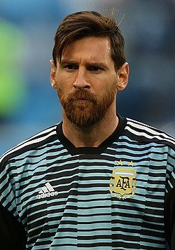

About

Lionel Messi, parfois surnommé Leo Messi, né le 24 juin 1987 à
Rosario, est un footballeur international argentin évoluant au poste
d'attaquant au FC Barcelone. Sextuple Ballon d'or et Soulier d'or
européen, Messi est vu comme l'un des meilleurs joueurs de tous les
temps. Joueur créatif et complet, il est un buteur et passeur
prolifique détenteur de nombreux records : septuple vainqueur du
Pichichi, il est le meilleur buteur de l'histoire du championnat
d'Espagne, du FC Barcelone, de la sélection argentine, et le deuxième
meilleur buteur de l'histoire de la Ligue des champions. Auteur de
plus de 700 buts en carrière et impliqué sur plus de 1000 buts, il est
actuellement le septième meilleur buteur de l'histoire du football en
matchs officiels et le meilleur passeur du xxie siècle. Il détient le
record mondial du nombre de buts inscrits sur une saison, sur une
année civile, et le record de buts sur une saison dans un championnat
européen. Messi se distingue également comme étant le meilleur
dribbleur du monde et l'un des meilleurs passeurs décisifs de ce
sport, étant le meilleur passeur de l'histoire du championnat
d'Espagne, de la Copa América, et le deuxième de la Ligue des
champions. Débutant le football dans sa ville natale de Rosario au
sein du club des Newell's Old Boys, il est atteint d'un problème de
croissance lorsqu'il rejoint à treize ans le centre de formation du FC
Barcelone, qui financera son traitement hormonal. Joueur d'un seul
club depuis ses débuts professionnels à seize ans, il a depuis disputé
plus de 720 matches sous les couleurs blaugrana, devenant ainsi le
deuxième joueur le plus capé de l'histoire du club catalan. Avec
trente-six titres remportés en carrière dont trente-quatre avec son
club, il est le joueur barcelonais et argentin le plus titré de
l'histoire et possède l'un des plus beaux palmarès de son sport. Avec
Barcelone, il a notamment remporté quatre Ligues des champions, dix
championnats d'Espagne et six Coupes d'Espagne. Avec son pays, Messi
remporte avec les sélections de jeunes la Coupe du monde des moins de
20 ans en 2005 ainsi qu'une médaille d'or aux Jeux olympiques de 2008.
International depuis ses dix-sept ans, il devient le plus jeune joueur
et buteur de l'histoire de son pays en Coupe du monde en 2006. L'année
suivante, sa sélection s'incline en finale de la Copa America tandis
que Messi est désigné meilleur jeune du tournoi. Devenu capitaine de
l'Albiceleste en 2011, il mène sa sélection lors de trois finales
internationales consécutives. Vice-champion du monde en 2014, il est
élu meilleur joueur du tournoi, mais sa sélection échoue en
prolongation en finale contre l'Allemagne. En 2015 et 2016,
l'Argentine s'incline en finale de la Copa América, à deux reprises
aux tirs au but contre le Chili. Sa notoriété dépasse le monde du
sport. Il est nommé trois fois dans le classement des personnalités
les plus influentes de la planète par le magazine Time et est le
premier footballeur de l'histoire à faire la Une du magazine
américain. Ambassadeur de l'UNICEF, il a créé une fondation d'aide à
l'enfance4 à l'âge de 20 ans.